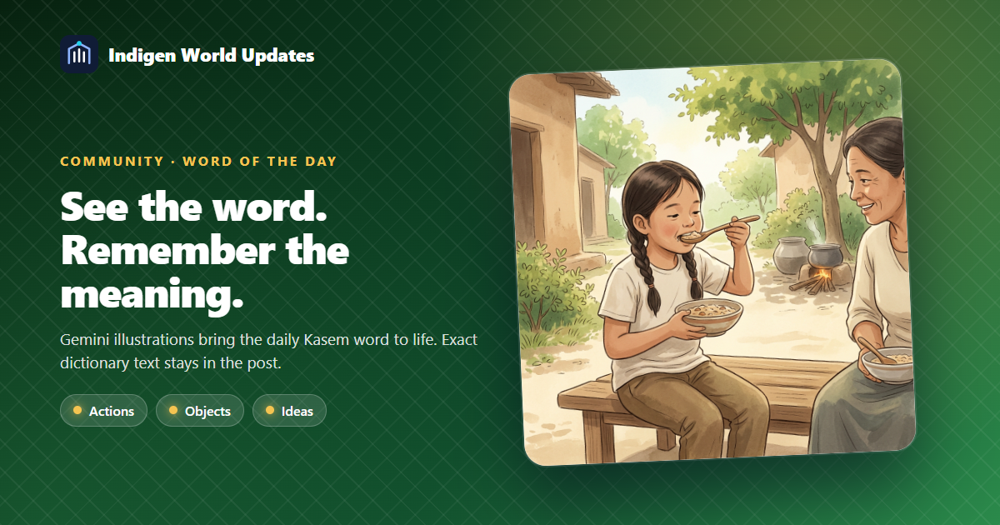
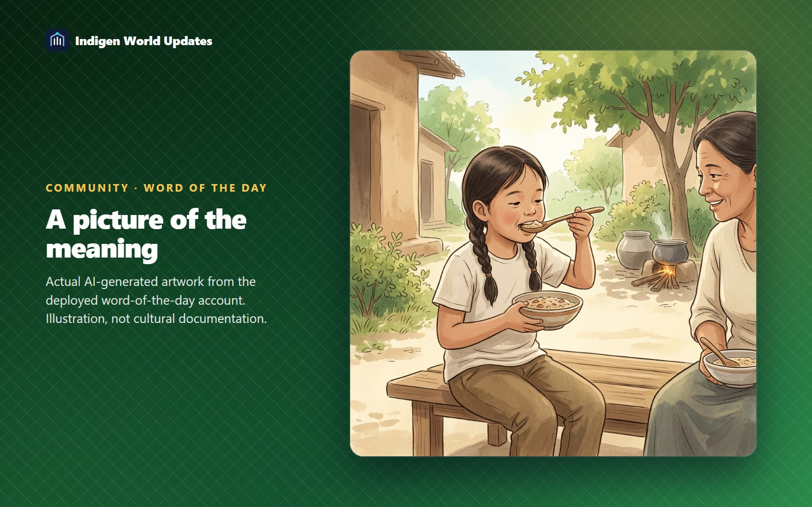

Zem Botarebu, our automated word-of-the-day account, now asks Gemini to draw an illustration of the selected word's meaning. The picture gives learners another way to connect a Kasem word with an idea, object or action.

For a verb, Gemini is asked to show someone, or an appropriate animal, performing the action. For a concrete noun, the named object, person, animal or place becomes the main subject. Abstract meanings and describing words use a simple scene or visual metaphor.
The illustration is based on the published dictionary's English meaning and word class. If a word has several meanings, the drawing focuses on the first. An illustration is a learning aid: speakers and published dictionary evidence remain the reference for Kasem meaning, pronunciation and usage.

Open the Indigen World community feed and visit @zem_botarebu. You can follow the account or save a post to revisit it. Its daily time remains 07:00 Ghana time (UTC).
The exact published Kasem spelling and English meaning stay in the post text. The picture is labelled as AI-generated, and its accessible description includes the meaning. No app update is required to view these ordinary community image posts.
The word job and its recovery job were deployed and verified on 15 October 2026. The production word job generated the picture for today's existing post, without creating another post.
The account needs a suitable published dictionary entry and a successful image response. If image generation fails or is declined, the new post waits for the existing limited retry process. It does not silently substitute a text card. Completed image uploads are reused when publication needs a retry.
This change applies to Zem Botarebu's word posts. It does not generate a new illustration whenever someone opens a dictionary entry. The artwork does not claim to show authentic customs or identifiable people.